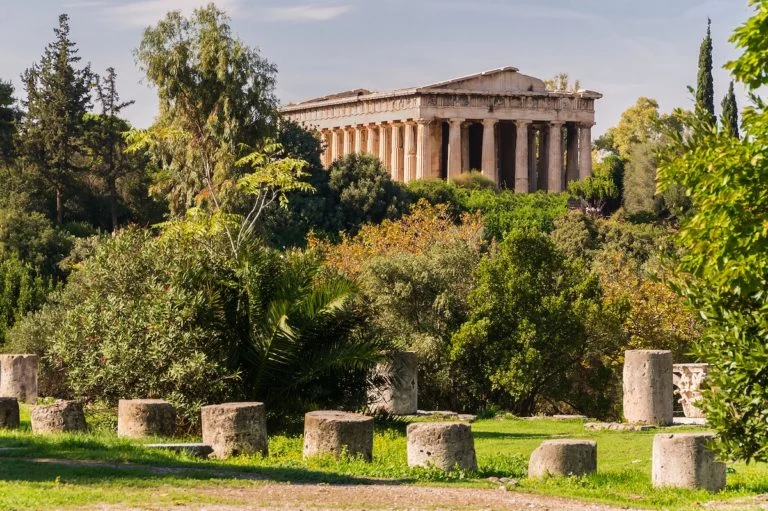

Daily Life
From Farming Food, to Keeping a family and religion
Food & Survival
EXPLORE
Everyday Food
For most people in Classical Greece, meals were simple and based
on locally available ingredients. Bread, olives, figs, grapes,
vegetables, and legumes were common foods. Wheat and barley were
especially important, with barley often being used to make a type
of porridge or coarse bread. Meat was less common in everyday
meals and was usually eaten during religious festivals or special
occasions.
The Importance of Olive Oil
Olive oil was one of the most important products in ancient Greek
life. It was used for cooking, preserving food, lighting lamps,
and even for personal hygiene. Olive trees grew well in the Greek
climate and became an important part of both the economy and the
diet. Olives themselves were also eaten as a common part of meals.
Fish & Sea Food
Because Greece has a long coastline and many islands, fish and
seafood were important sources of food. Sardines, tuna, octopus,
shellfish, and other marine animals could be caught in the Aegean
and Mediterranean seas. Fresh fish was especially valuable, while
salted or dried fish could be stored for longer periods and
transported to other areas.
Meat & Special Occasions
Meat was not an everyday food for most ordinary Greeks. Sheep,
goats, pigs, and chickens were raised for food, but animals were
often sacrificed to the gods during religious ceremonies. After
the sacrifice, the meat could be shared among the participants.
Wealthier families could afford meat more frequently, while poorer
people relied more heavily on grains, vegetables, legumes, and
fish.
Food Preservation
Without modern refrigerators, Greeks needed ways to keep food from
spoiling. They preserved foods by drying, salting, smoking, or
storing them in containers such as clay jars called amphorae.
Grapes could be dried into raisins, while fish and meat could be
salted. These techniques allowed people to keep food for longer
periods, especially during seasons when fresh supplies were
limited.
Water & Daily Survival
Access to clean water was essential for survival. People collected
water from wells, springs, rivers, and public fountains. In cities
such as Athens, fountains provided important sources of water for
households. However, water quality could vary, and people also
drank wine that had usually been diluted with water. Pure wine was
generally considered too strong for normal drinking.
Farming & Agriculture
Agriculture was the foundation of survival in Classical Greece.
Farmers grew crops such as barley, wheat, grapes, olives, figs,
onions, and various vegetables. Goats and sheep were particularly
useful because they could survive on the rocky Greek landscape and
provided milk, meat, and wool. However, the mountainous terrain
and limited fertile land made farming difficult in many parts of
Greece.
Food & Social Life
Food was also connected to Greek social and cultural life.
Wealthier citizens could organize large meals called symposia,
where men gathered to eat, drink diluted wine, talk, and discuss
philosophy or politics. Ordinary families had much simpler meals.
What people ate depended greatly on their wealth, occupation,
location, and access to local resources.
Trade & Survival
Trade helped Greek communities obtain foods that were difficult to
produce locally. Athens and other cities imported grain from
regions around the Black Sea and Egypt. Olive oil, wine, pottery,
and other Greek products were traded in return. This trade was
especially important for Athens because the region of Attica could
not produce enough grain to feed its entire population.
Survival in Time of Crisis
War, drought, poor harvests, and disease could threaten food
supplies. During long wars, such as the Peloponnesian War, access
to food became a serious concern. Athens depended heavily on
imported grain, which made its trade routes extremely important.
The ability to store food and maintain access to trade could mean
the difference between surviving and facing severe hunger.
Family & Home
EXPLORE
The Greek Family
Family was an important part of life in Classical Greece. The
household, known as the oikos, included not only parents and
children but sometimes grandparents, relatives, and enslaved
people. The family was responsible for managing the household,
raising children, and passing property and traditions from one
generation to the next.
The Greek House
Most Greek houses were built around a central courtyard. Rooms
were arranged around this open space, which provided light and
fresh air. Houses could be simple and small or much larger
depending on the wealth of the family. Walls were usually made
from mud bricks placed on stone foundations, while roofs were
commonly covered with clay tiles.
Life Inside the Home
The home was mainly a place for eating, sleeping, working, and
family activities. Cooking usually took place over a simple hearth
or brazier. Furniture was limited compared with modern homes and
included wooden beds, stools, tables, chests, and storage
containers. Wealthier households could have more decorated
furniture and painted walls.
Women's Role
Women were generally expected to manage the household and oversee
domestic activities. They could supervise food preparation,
weaving, clothing production, and the care of children. In many
Greek communities, women had fewer legal and political rights than
men and were largely excluded from public political life. However,
their work was essential to the functioning of the household.
Men's Role
Men were generally responsible for activities outside the home,
including farming, trade, crafts, military service, and political
life. In Athens, male citizens could participate in the Assembly
and other aspects of public life. Men were also expected to
provide for their households and protect the family.
Childhood & Education
Children spent their early years with their families, but their
education depended heavily on their gender and social status. Boys
from wealthier families could receive education in reading,
writing, music, and physical training. In Athens, boys were often
prepared for participation in public life. Girls generally
received most of their education at home, learning household
skills such as weaving and managing domestic activities
Marriage
Marriage was an important social and family arrangement. In many
cases, marriages were organized by the families rather than based
entirely on romantic choice. The main purpose was to create a
family, produce children, and connect households. A bride usually
moved from her father's household to her husband's household after
marriage.
Work at Home
The household was also an important place of production. Women and
enslaved people could spin wool, weave cloth, prepare food, and
make clothing. Men might repair tools, make furniture, or carry
out other crafts. Many everyday objects needed by a family were
produced within the household rather than purchased from a shop.
Religion at Home
Religion was not limited to temples and public ceremonies.
Families also practiced religious traditions inside their homes.
Household rituals could involve prayers, offerings, and respect
for household gods and ancestors. The hearth was especially
important because it represented the center of family life and was
associated with Hestia, goddess of the hearth.
Family & Social Status
A person's family and household strongly influenced their position
in Greek society. Wealthy families could own large houses,
farmland, businesses, and enslaved people, while poorer families
often lived in much simpler conditions. Family connections could
also influence marriage, inheritance, political relationships, and
social opportunities.
Work & Responsibilities
EXPLORE
Crafts & Skilled Work
Many people worked as skilled craftspeople. Potters produced clay
vessels used for cooking, storage, and transporting goods.
Metalworkers made tools, weapons, and household objects, while
carpenters worked with wood to make furniture, buildings, and
ships. Greek pottery and other crafted goods were also traded
throughout the Mediterranean.
Trade & Merchants
Trade was an important part of the Greek economy, particularly in
cities such as Athens. Merchants transported goods by land and
sea, trading products such as olive oil, wine, pottery, grain,
metals, and textiles. The Aegean and Mediterranean seas connected
Greek communities with other regions and allowed goods to travel
over long distances.
Political Responsibilities
For male citizens in democratic Athens, participating in public
life was an important responsibility. Citizens could attend the
Assembly, vote on decisions, serve on juries, and sometimes hold
public offices. Political participation was considered an
important part of being an active citizen, although women,
enslaved people, and foreigners did not have the same political
rights.
Military Service
Military service was an important responsibility for male
citizens. Young men could receive physical and military training,
while adult citizens could serve as soldiers when required.
Hoplites fought as heavily armed infantrymen and usually provided
their own weapons and armor. Athens also depended heavily on its
navy, whose rowers played an important role in warfare.
Women's Responsibilities
Women were generally responsible for managing many aspects of
household life. Their work included preparing food, making and
repairing clothing, weaving textiles, caring for children, and
supervising domestic workers. In wealthy households, women might
organize the work of enslaved people and manage household
supplies.
Textile Production
Making clothing was an important household activity. Wool and
other fibers were spun into thread and then woven into fabric.
Women commonly played a major role in spinning and weaving,
producing clothing and household textiles. In wealthy families,
some of this work could be supervised rather than performed
directly by the women of the household.
Shopkeepers & Artisans
Cities were filled with small workshops and businesses. Bakers,
shoemakers, blacksmiths, potters, builders, and other artisans
produced goods for local communities. Some worked independently,
while others employed assistants or enslaved workers. Markets
provided places where people could buy food, clothing, tools,
pottery, and other necessities.
Shipbuilding & Seafaring
Because Greece was surrounded by seas and had many islands,
shipbuilding and sailing were important occupations. Athens in
particular developed a powerful navy. Shipbuilders constructed
vessels for trade and warfare, while sailors and rowers helped
transport people and goods across the Mediterranean.
Responsibilies & Social Class
Work and responsibilities differed greatly depending on a person's
social position. Wealthy citizens could own land and businesses
and might have other people working for them. Poorer citizens
often worked directly for their living. Women, foreigners, and
enslaved people had different legal and social roles from male
citizens, showing how strongly work was connected to status in
Classical Greek society.
Trade & Travel
EXPLORE
Trade Across the Mediterranean
Trade was essential to life in Classical Greece. Greek communities
traded with one another and with regions across the Mediterranean
and Black Sea. Ships carried goods such as olive oil, wine,
pottery, grain, metals, and textiles. Major ports became busy
centers where merchants exchanged products from different parts of
the ancient world.
Importing Grain
Grain was one of the most important goods traded by the Greeks.
Areas such as Athens could not produce enough grain to feed their
growing populations, so they depended on imports. Large quantities
of grain came from places such as Egypt and the regions around the
Black Sea. Keeping these trade routes open was essential for the
survival of major cities.
Greek Exports
Greek communities exported many products to other regions. Olive
oil and wine were especially valuable, while Greek pottery was
widely traded because of its quality and distinctive designs.
Craftspeople also produced metal objects, weapons, textiles, and
other goods that could be exchanged for products that Greece
lacked.
Markets & Currency
Markets were an important part of everyday economic life. In
Athens, the Agora served as both a marketplace and a central
meeting place. Merchants and craftsmen sold food, pottery,
clothing, tools, and other goods. Coins made trade easier, with
silver coins such as the Athenian owl tetradrachm becoming widely
recognized in the ancient Mediterranean.
Travel by Sea
The sea was the easiest way to travel between many Greek
communities. Greece's mountains and rugged landscape made land
journeys difficult, while ships could connect islands and distant
coastal settlements. Sailors traveled between ports throughout the
Aegean, Mediterranean, and Black Sea.
Travel by Land
People also traveled by land, although journeys could be difficult
and time-consuming. Travelers used roads and paths that connected
cities, villages, and religious sanctuaries. Horses, mules,
donkeys, and carts could be used to transport people and goods.
Wealthier travelers could afford horses or hire animals and
guides.
Religious Travel
Religion was an important reason for travel. Greeks traveled to
famous sanctuaries such as Olympia, Delphi, and Epidaurus to
participate in religious festivals, competitions, and ceremonies.
These journeys brought people from different Greek communities
together and helped spread cultural traditions.
Exploration & Colonies
Greek sailors had been establishing colonies around the
Mediterranean and Black Sea for centuries before the Classical
Period. These settlements created networks connecting different
regions. Greek colonies could provide access to fertile land, raw
materials, and new markets, while also spreading Greek language,
customs, and culture.
Travel During War
War could make travel dangerous. Pirates, enemy armies, and naval
conflicts threatened travelers and merchant ships. During major
conflicts such as the Peloponnesian War, control of important sea
routes became strategically important. Protecting trade routes was
essential for cities that depended on imported food and other
resources.
A Connected Greek World
Although Greece was divided into independent city-states, trade
and travel connected them to one another and to distant regions.
Merchants, sailors, soldiers, athletes, pilgrims, and travelers
carried not only goods but also ideas, stories, technologies, and
cultural traditions. The Mediterranean therefore became an
important network linking the Greek world with other
civilizations.
Religion
EXPLORE
The Greek Gods
Religion was an important part of everyday life in Classical
Greece. Greeks worshipped many gods and goddesses, each associated
with different aspects of life and nature. Zeus was the king of
the gods, while Athena was associated with wisdom and warfare,
Apollo with music and prophecy, and Aphrodite with love and
beauty. The gods were believed to influence human life and the
natural world.
Temples & Sacred Places
Temples were built as places dedicated to particular gods and
goddesses. They usually contained a statue of the deity and an
altar where offerings and sacrifices could be made. Famous
examples include the Parthenon in Athens, dedicated to Athena, and
the Temple of Apollo at Delphi. Sacred spaces could also include
springs, groves, caves, and other places considered important to
the gods.
Sacrifices & Offerings
Animal sacrifice was an important part of Greek religious
ceremonies. Animals such as sheep, goats, pigs, and cattle could
be sacrificed during festivals and special occasions. Parts of the
animal were offered to the gods, while the remaining meat was
often cooked and shared among the participants. People also made
smaller offerings such as food, wine, flowers, and valuable
objects.
Religious Festivals
Festivals brought communities together to honor their gods. They
could include processions, music, dancing, athletic competitions,
theatrical performances, and sacrifices. The Panathenaia in Athens
honored Athena, while the Dionysia celebrated Dionysus and became
closely connected with the development of Greek theatre.
Oracles & Prophecy
Many Greeks sought advice from the gods through oracles. The most
famous was the Oracle of Apollo at Delphi. Visitors came to ask
questions about important decisions such as wars, political
matters, travel, or personal concerns. The priestess known as the
Pythia delivered prophetic messages that were interpreted by
priests.
Religion at Home
Religion was also practiced inside the home. Families could make
offerings and prayers to household gods and ancestors. The hearth
was especially important and was associated with Hestia, goddess
of the hearth and domestic life. Religious rituals helped connect
family life with the wider religious traditions of the community.
Gods & Nature
The Greeks believed that gods were connected to different parts of
the natural world. Poseidon was associated with the sea and
earthquakes, Demeter with agriculture and the harvest, and Artemis
with hunting and wild animals. Religious beliefs helped people
understand and give meaning to natural events and forces that
affected their lives.
Death & the Afterlife
Greeks believed that the soul continued to exist after death. The
dead were believed to enter the underworld, ruled by Hades. Burial
customs were important, and families often placed offerings with
the deceased. Ideas about the afterlife varied, but many Greeks
believed that proper burial and respect for the dead were
important religious responsibilities.
Mythology & Religion
Myths were closely connected to Greek religion. Stories about
gods, heroes, monsters, and legendary events helped explain the
relationships between humans and the divine. Myths were shared
through poetry, art, theatre, and oral storytelling. They were not
simply entertainment but formed an important part of Greek culture
and religious traditions.
Religion & the City-State
Religion was closely connected to the polis, or city-state. Each
city often had particular gods, festivals, and sacred traditions
that were central to its identity. Athens, for example, considered
Athena its patron goddess. Public religious ceremonies helped
strengthen the sense of community and shared identity among
citizens.
People & Society
EXPLORE

The City-State
Classical Greek society was organized around the polis, or
city-state. Each city-state had its own government, laws, army,
and traditions. Athens, Sparta, Corinth, and Thebes were some of
the most important city-states. Although they were politically
independent, they shared the Greek language, religion, and many
cultural traditions.
Citizens
Citizens had an important position in Greek society, but
citizenship was not available to everyone. In Athens, adult male
citizens could participate in politics, vote in the Assembly, and
serve in public positions. Citizenship also came with
responsibilities, including military service and participation in
the community.
Women
Women played an important role in family and household life but
generally had fewer rights than male citizens. In Athens, women
could not vote or participate directly in political life. Their
responsibilities often included managing the household, raising
children, preparing food, and producing textiles. The position of
women varied between different Greek communities.
Metics & Foreigners
In Athens, foreigners who lived permanently in the city were known
as metics. They could work, own businesses, and participate in
economic life, but they did not have the same political rights as
Athenian citizens. Many were merchants, craftsmen, and skilled
workers who contributed significantly to the city's economy.
Enslaved People
Enslaved people were an important part of the economy and society.
They worked in households, farms, workshops, and sometimes mines.
Their lives varied depending on their work and the people who
owned them. Unlike citizens, they had no political rights and were
legally considered the property of their owners.
Sparta & Athens
Different Greek city-states developed different social systems.
Athens became known for democracy, trade, philosophy, art, and
cultural life. Sparta focused heavily on military training,
discipline, and warfare. Comparing Athens and Sparta shows how
different Greek societies could be even though they shared many
religious and cultural traditions.
Education
Education depended greatly on gender, wealth, and location. Boys
from wealthier families could study reading, writing, music,
literature, mathematics, and physical education. In Athens,
education often prepared boys for participation in public life.
Spartan boys received extensive physical and military training
from a young age.
Theatre & Entertainment
Entertainment was an important part of Greek society. Theatre
developed into a major cultural tradition, particularly in Athens.
Plays included tragedies and comedies and were often performed
during religious festivals dedicated to Dionysus. Athletic
competitions, music, dancing, and public celebrations were also
popular forms of entertainment.
Social Classes
Greek society was divided into different social groups with
different rights and responsibilities. Wealthy citizens could own
large amounts of land and employ others, while poorer citizens
often worked as farmers, craftsmen, or laborers. Below citizens in
the social hierarchy were foreigners and enslaved people, who had
fewer legal and political rights.
Public Life & Community
For male citizens, being part of the community involved more than
simply living in a city. Citizens could take part in political
meetings, religious festivals, military service, courts, and
public events. Public spaces such as the Agora became important
places for people to meet, trade, discuss politics, and exchange
ideas.
A Diverse Greek Society
There was no single way of life across the Greek world. People's
experiences differed depending on where they lived, their gender,
wealth, occupation, and social status. Life in democratic Athens
could be very different from life in militaristic Sparta or in a
smaller rural community. This diversity was one of the defining
characteristics of Classical Greek society.